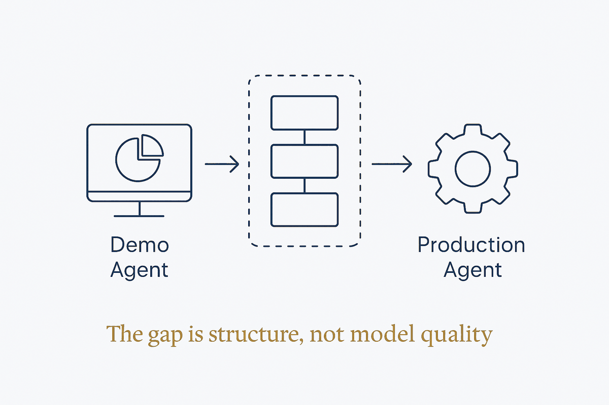

The demo is one prompt, one tool call, one context window. Production is planning, layered memory, guardrails, observability and eval loops — and the gap is not model quality.

A working demo and a working system look alike for about five minutes. The demo does one-shot reasoning against a hardcoded tool list, keeps history in a fixed context window until it truncates, and on failure retries the same call and hands the error to the user. Each of those is fine at the scale of a demonstration and none survives contact with real work.
What production adds is not intelligence but structure, in five places. Planning decomposes intent into sub-tasks with resolved dependencies rather than reasoning in one shot. Memory becomes layered — a scratchpad for the current task, episodic recall of past interactions, and a procedural library of tool sequences that worked — with summarisation and compaction so it survives the session. Guardrails wrap input, execution and output, plus a human gate and a circuit breaker when failures cross a threshold. Observability traces every call and tracks latency, cost, success rate and drift. Eval loops close it, feeding what was learned back in.
The most instructive part of the comparison is the demo's failure handling: no fallback, no self-correction, and silent failures. That last word is the whole distinction. A demo that fails loudly gets fixed; a system that fails quietly accumulates wrong answers that nobody has reason to doubt.
Which reframes the usual question. Teams asking whether a stronger model would make their agent reliable are asking about the part they rent. Reliability comes from the five layers around it — and a weaker model inside a real harness will beat a frontier model inside a demo, every time.